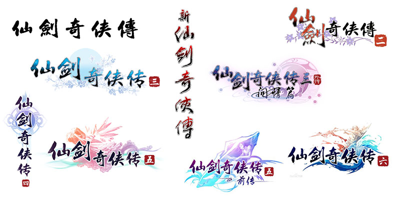
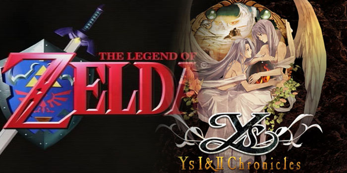
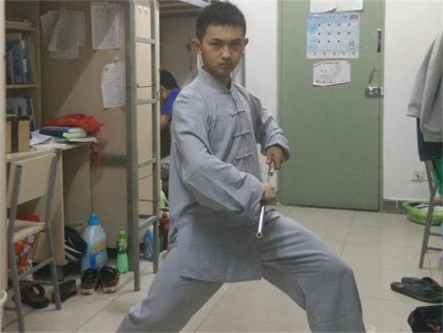
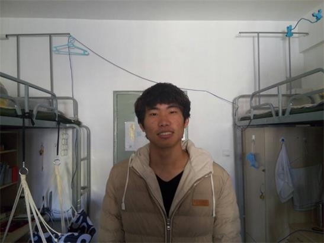
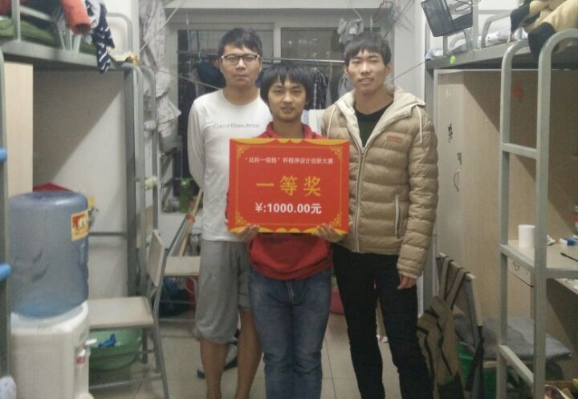

ArpgPal - 仙剑奇侠传
"Pal" means:
Paladin
*骑士，游侠
其实这里的Pal指的是我最爱的一个PC游戏系列，国产RPG经典之作：
《仙剑奇侠传》系列

"Arpg" means:
Action Role Playing Game
*动作角色扮演
区别与传统的Rpg角色扮演类游戏，Arpg最大的特色是其战斗系统的不同：
即时战斗取缔回合制战斗
带给玩家更紧张刺激的游戏体验

仙剑是我最爱的经典游戏，但其回合制的战斗模式常常被众人吐槽
于是我就想，何不趁这次机会，做一款即时战斗制的仙剑呢？
我们对这个计划做了详细的分析，发现要做这样一款Arpg，关键的技术难点在于：
如何处理冒险地图与地形碰撞
幸运的，我们发现FunCode其实是有Tilemap（瓦片地图）的概念的。
虽然这一模块还未完善，但至少已经满足制作Arpg的基本条件了
问题解决后，我们做了成员分工：
姓名 | 负责的方面 | 工作量
陈正 程序、游戏策划 40%
杨衍康 素材、视频剪辑 30%
何永先 文案、游戏测试 30%
然后，我们就朝着这个目标：
基于经典游戏《仙剑奇侠传》的设定
融入动作角色扮演类游戏要素
做一款独特的ArpgPal
开始了小学期FunCode的学习之旅~~~
游戏制作过程中，我们实在是遇到了不少困难：
对于这样一款Arpg，我们完全没办法在示例工程里找到模板参照，期间遇到的许多问题都不得不自己想办法，从零开始编程设计
程序、游戏策划：陈正

不止是主程序的我，我的两位同伴也一样很辛苦：
素材的收集整理、音乐音效的制作、游戏的bug调试等方方面面的诸多问题，绝不是一个人能完成的工作量
素材、视频剪辑：杨衍康

大家都很有干劲，焕发着C语言程序课上从未有过的活力：
从角色动起来、怪物具备Ai，到技能释放、Boss围追，我们一点一点的看着由我们亲手搭建起的游戏世界成型
文案、游戏测试：何永先

而这些也让我们明白了团队与合作的重要，明白了很多事情绝不是一个人就能独自完成
成果展示(一） - 游戏中主要有以下八个系统：
1、Ai系统，包括随机扫荡、遇敌追击、自动寻路、回巢防守等等
2、奖励系统，通过杀怪、开宝箱等获取金币、经验
3、商店系统，可购买装备、补充体力、回复魔法
4、收集系统，玩家需集齐仙剑五灵珠，才能开启通向终点的道路
5、合作系统，双人同时进行游戏，合作战斗，并有一定的交互
6、战斗系统，包括物理攻击、魔法技能、施法警告等
7、成长系统，玩家可以通过积累经验提升等级，获得力量加强、技能进阶
8、职业系统，玩家可扮演近战战士（李逍遥）、远程法师（赵灵儿）两种职业
成果展示(二） - 游戏主要特色：
1、即时战斗，玩家在地图上明雷遇敌，借助平砍、远法、战技与敌人战斗
2、Ai完善，敌人会采取游荡、追击、守卫、寻路等多种策略与玩家较量
3、元素丰富，游戏中八大系统，多项元素，不落入传统的砍杀-升级的单调模式
4、地图复杂，提供玩家很大的探索空间，不限制玩家的行动路线
5、光效音效，精心准备图片、粒子、音源素材，注重游戏细节体验
成果展示(三） - 工作量总结：
1、七个.cpp文件2000多行代码，分别管理关卡流程、游戏逻辑、Ai算法、链表数据、功能函数、玩家控制以及商店系统等模块
2、Ai生物24种，中立、敌对、Boss等等行为各有不同，斜四方向行走姿态各异
3、特效技能20种，由一系列序列帧组成，播放效果平滑绚丽
4、图片资源70多个，音效资源10个，精选自几百个预备素材
5、PPT展示 + Word文档说明 + 5张Excel表格 + 600M游戏试玩视频，文案资料相当丰富（还有现在您正在看的这份H5）